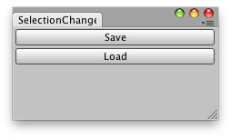

EditorWindow.OnSelectionChange()
Description 描述
Called whenever the selection has changed.

Saves the current selection and load it later with a simple click.
// Simple example that lets you save the current selection and load it.
using UnityEngine; using UnityEditor; using System.Collections;
public class ExampleClass : EditorWindow { private int[] selectionIDs;
[MenuItem("Example/Selection Saver")] private static void Init() { ExampleClass window = (ExampleClass)GetWindow(typeof(ExampleClass)); window.Show(); }
void OnGUI() { if (GUILayout.Button("Save")) SaveSelection();
if (GUILayout.Button("Load")) LoadLastSavedSelection(); }
void OnSelectionChange() { selectionIDs = Selection.instanceIDs; }
private void SaveSelection() { var saveStr = "";
foreach (int i in selectionIDs) { saveStr += i.ToString() + ";"; }
saveStr = saveStr.TrimEnd(char.Parse(";")); EditorPrefs.SetString("SelectedIDs", saveStr); }
private void LoadLastSavedSelection() { string[] strIDs = EditorPrefs.GetString("SelectedIDs").Split(char.Parse(";"));
int[] ids = new int[strIDs.Length]; for (var i = 0; i < strIDs.Length; i++) ids[i] = int.Parse(strIDs[i]); Selection.instanceIDs = ids; } }